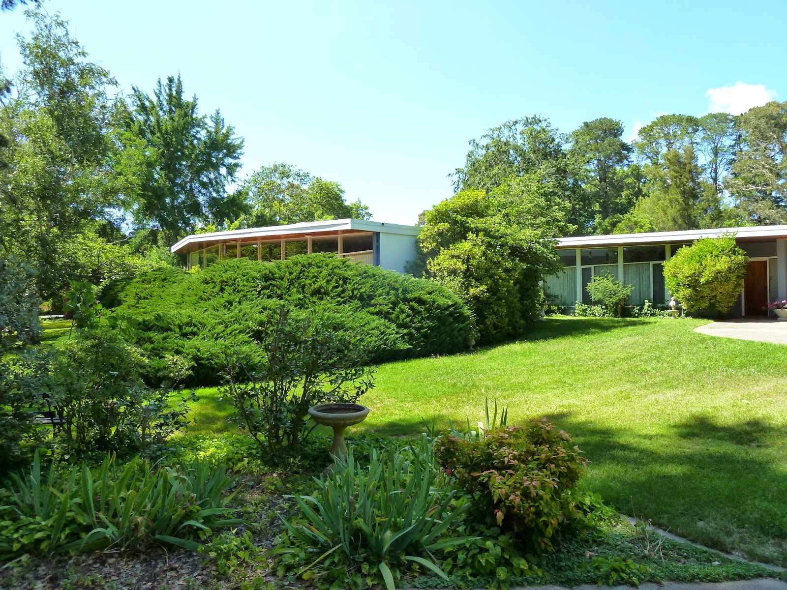

FENNER HOUSE
Fenner House frontside view (courtesy of Canberra House)


The building consists of two parallel, off-set wings facing north-north-east which represent two living zones: the bedrooms, bathrooms and study in the rear wing and the eating and entertainment areas in the front wing. The two wings are linked by an enclosed, glass walled gallery.
The roof is a long, unbroken, low pitch gable with internally raked ceilings.
The construction is double brick, with large areas of glazing in full height narrow timber frames. The brickwork is bagged and painted—grey on the north-south walls and white on the east-west walls, both original colours.
Information courtesy of: Australian Institute of Architects RSTCA Citation No. R26
Conversations with the owner, Professor Frank Fenner